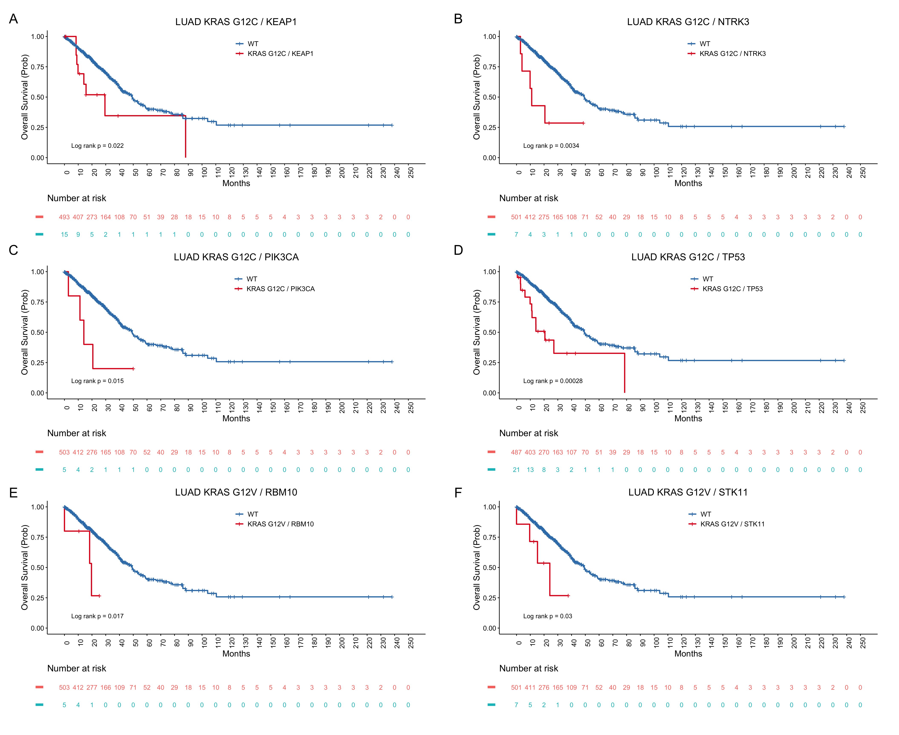

Last updated: 2022-08-19
Checks: 6 1
Knit directory: genie/
This reproducible R Markdown analysis was created with workflowr (version 1.7.0). The Checks tab describes the reproducibility checks that were applied when the results were created. The Past versions tab lists the development history.
Great! Since the R Markdown file has been committed to the Git repository, you know the exact version of the code that produced these results.
The global environment had objects present when the code in the R
Markdown file was run. These objects can affect the analysis in your R
Markdown file in unknown ways. For reproduciblity it’s best to always
run the code in an empty environment. Use wflow_publish or
wflow_build to ensure that the code is always run in an
empty environment.
The following objects were defined in the global environment when these results were created:
| Name | Class | Size |
|---|---|---|
| cols | numeric | 64 bytes |
| comutant | character | 376 bytes |
| dat.list | grouped_df;tbl_df;tbl;data.frame | 3.7 Kb |
| df | data.frame | 270.5 Kb |
| h | unit;unit_v2 | 78.4 Kb |
| i | integer | 56 bytes |
| kras | character | 288 bytes |
| plot_titles | character | 752 bytes |
| rank.gg | list | 2.2 Mb |
| rank.gg2 | list | 21.3 Mb |
| rv | list | 2.9 Kb |
| stats | list | 1.4 Mb |
| stats2 | list | 1.4 Mb |
| stripsize | function | 13.6 Kb |
| tar_cols | list | 480 bytes |
The command set.seed(20220803) was run prior to running
the code in the R Markdown file. Setting a seed ensures that any results
that rely on randomness, e.g. subsampling or permutations, are
reproducible.
Great job! Recording the operating system, R version, and package versions is critical for reproducibility.
Nice! There were no cached chunks for this analysis, so you can be confident that you successfully produced the results during this run.
Great job! Using relative paths to the files within your workflowr project makes it easier to run your code on other machines.
Great! You are using Git for version control. Tracking code development and connecting the code version to the results is critical for reproducibility.
The results in this page were generated with repository version 7908ad8. See the Past versions tab to see a history of the changes made to the R Markdown and HTML files.
Note that you need to be careful to ensure that all relevant files for
the analysis have been committed to Git prior to generating the results
(you can use wflow_publish or
wflow_git_commit). workflowr only checks the R Markdown
file, but you know if there are other scripts or data files that it
depends on. Below is the status of the Git repository when the results
were generated:
Ignored files:
Ignored: .Rhistory
Ignored: todo.org
Unstaged changes:
Modified: analysis/fig6.Rmd
Modified: analysis/index.Rmd
Note that any generated files, e.g. HTML, png, CSS, etc., are not included in this status report because it is ok for generated content to have uncommitted changes.
These are the previous versions of the repository in which changes were
made to the R Markdown (analysis/fig_s18.Rmd) and HTML
(docs/fig_s18.html) files. If you’ve configured a remote
Git repository (see ?wflow_git_remote), click on the
hyperlinks in the table below to view the files as they were in that
past version.
| File | Version | Author | Date | Message |
|---|---|---|---|---|
| Rmd | 96f97ee | abalan2 | 2022-08-19 | rename S15 to S18 |
| html | 96f97ee | abalan2 | 2022-08-19 | rename S15 to S18 |
| Rmd | 74ca5c1 | abalan2 | 2022-08-19 | rename S18 to S23 |
| Rmd | 052f6dd | abalan2 | 2022-08-19 | rename S19 to S24 |
| Rmd | c05ec81 | abalan2 | 2022-08-19 | rename S18 to S24 |
| Rmd | 2fda1f3 | rscharpf | 2022-08-18 | Initialize RAS reproducibility workflowr |
| html | 2fda1f3 | rscharpf | 2022-08-18 | Initialize RAS reproducibility workflowr |
library(fgsea)
library(tidyverse)
library(dplyr)
library(here)
library(grid)
library(gridExtra)
library(rasfuns)FIG <- 15
dat.list <- here("output", "gsea_data_wrangling.Rmd",
"gsea_results.rds") %>%
readRDS()
dat <- dat.list %>%
filter(figure==FIG)
kras <- dat$kras[[1]]
comutant <- dat$comutant[[1]]
stats <- dat$stats[[1]]
signif <- dat$signif[[1]]
cancer <- dat$cancer[[1]]
de <- dat$de[[1]]
plot_titles <- paste0(kras, " / ", comutant, " co-mutant") %>%
paste0(" vs ", kras, " mutant ", cancer)stats[[3]] %>%
mutate(pathway=as.character(pathway)) %>%
filter(pathway == "HM Interferon Gamma Response")# A tibble: 197 × 9
gene pathway neglo…¹ pval padj rank nes direc…² numbe…³
<chr> <chr> <dbl> <dbl> <dbl> <dbl> <dbl> <fct> <int>
1 PNP HM Interferon Gam… 1.88 2.02e-9 1.24e-7 150 -1.93 Down 28087
2 VAMP5 HM Interferon Gam… 1.62 2.02e-9 1.24e-7 248 -1.93 Down 28087
3 IRF8 HM Interferon Gam… 1.59 2.02e-9 1.24e-7 269 -1.93 Down 28087
4 IFNAR2 HM Interferon Gam… 1.46 2.02e-9 1.24e-7 364 -1.93 Down 28087
5 CCL7 HM Interferon Gam… 1.39 2.02e-9 1.24e-7 430 -1.93 Down 28087
6 FAS HM Interferon Gam… 1.35 2.02e-9 1.24e-7 474 -1.93 Down 28087
7 EIF4E3 HM Interferon Gam… 1.31 2.02e-9 1.24e-7 518 -1.93 Down 28087
8 SSPN HM Interferon Gam… 1.30 2.02e-9 1.24e-7 533 -1.93 Down 28087
9 IFI30 HM Interferon Gam… 1.29 2.02e-9 1.24e-7 540 -1.93 Down 28087
10 IL7 HM Interferon Gam… 1.24 2.02e-9 1.24e-7 611 -1.93 Down 28087
# … with 187 more rows, and abbreviated variable names ¹neglog10p, ²direction,
# ³number_genes
# ℹ Use `print(n = ...)` to see more rowsFor first element, G12D/APC I have 10 “Down” that are all statistically significant. I don’t have any that are “Up”.
stats2 <- map(stats, relevel_gsea_pathway)
rank.gg <- map(stats2, gg_qq)
leg <- cowplot::get_legend(rank.gg[[2]])
rank.gg[[6]] <- rank.gg[[6]] + xlab("")
fig <- rank.gg[[6]] +
guides(color=guide_legend(title="",
override.aes=list(size=5)))
leg <- cowplot::get_legend(fig)
rank.gg2 <- plot_titles %>%
str_wrap(width=75) %>%
map2(rank.gg, add_qq_title)grobs <- map(rank.gg2, ggplotGrob)
h <- grobs[[1]]$heights
w <- grobs[[1]]$widths
for(i in seq_along(grobs)){
h1 <- grobs[[i]]$heights
w1 <- grobs[[i]]$widths
if(length(h1) == length(h))
grobs[[i]]$heights <- h
if(length(w1) == length(w))
grobs[[i]]$widths <- w
}
grobs[[10]] <- nullGrob()
grid.newpage()
vp <- viewport(x=unit(0.5, "npc"),
y=unit(0.99, "npc"),
width=unit(0.98, "npc"),
height=unit(0.95, "npc"),
just=c("center", "top"))
pushViewport(vp)
M <- rbind(c(1, 2, 3),
10,
c(4, 5, 6),
10,
c(7, 8, 9))
grid.arrange(grobs=grobs,
widths=c(1, 1, 1),
heights=c(1, 0.1, 1, 0.1, 1),
layout_matrix=M,
newpage=FALSE)
upViewport()
vp.leg <- viewport(x=unit(0.85, "npc"),
y=unit(0.4, "npc"),
width=unit(0.7, "npc"),
height=unit(0.5, "npc"),
just="center")
pushViewport(vp.leg)
##grid.draw(leg)
upViewport()
x1 <- unit(rep(0.015, 3), "npc")
x2 <- unit(rep(0.34, 3), "npc")
x3 <- unit(rep(0.67, 3), "npc")
y <- unit(c(0.99, 0.67, 0.34), "npc")
grid.text(LETTERS[seq(1, 9, 3)],
x=x1, y=y,
gp=gpar(cex=3.5))
grid.text(LETTERS[seq(2, 9, 3)],
x=x2, y=y,
gp=gpar(cex=3.5))
grid.text(LETTERS[seq(3, 9, 3)],
x=x3, y=y,
gp=gpar(cex=3.5))
sessionInfo()R version 4.2.1 (2022-06-23)
Platform: x86_64-apple-darwin21.5.0 (64-bit)
Running under: macOS Monterey 12.5.1
Matrix products: default
BLAS: /usr/local/Cellar/openblas/0.3.20/lib/libopenblasp-r0.3.20.dylib
LAPACK: /usr/local/Cellar/r/4.2.1/lib/R/lib/libRlapack.dylib
locale:
[1] en_US.UTF-8/en_US.UTF-8/en_US.UTF-8/C/en_US.UTF-8/en_US.UTF-8
attached base packages:
[1] grid stats graphics grDevices utils datasets methods
[8] base
other attached packages:
[1] fgsea_1.22.0 rasfuns_1.1.5 gridExtra_2.3 here_1.0.1
[5] forcats_0.5.1 stringr_1.4.0 dplyr_1.0.9 purrr_0.3.4
[9] readr_2.1.2 tidyr_1.2.0 tibble_3.1.8 ggplot2_3.3.6
[13] tidyverse_1.3.2 workflowr_1.7.0
loaded via a namespace (and not attached):
[1] matrixStats_0.62.0 bitops_1.0-7 fs_1.5.2
[4] lubridate_1.8.0 httr_1.4.3 rprojroot_2.0.3
[7] GenomeInfoDb_1.32.3 tools_4.2.1 backports_1.4.1
[10] bslib_0.4.0 utf8_1.2.2 R6_2.5.1
[13] DBI_1.1.3 BiocGenerics_0.42.0 colorspace_2.0-3
[16] withr_2.5.0 tidyselect_1.1.2 processx_3.7.0
[19] compiler_4.2.1 git2r_0.30.1 cli_3.3.0
[22] rvest_1.0.2 xml2_1.3.3 labeling_0.4.2
[25] sass_0.4.2 scales_1.2.0 callr_3.7.1
[28] digest_0.6.29 rmarkdown_2.14 XVector_0.36.0
[31] pkgconfig_2.0.3 htmltools_0.5.3 dbplyr_2.2.1
[34] fastmap_1.1.0 highr_0.9 rlang_1.0.4
[37] readxl_1.4.0 rstudioapi_0.13 farver_2.1.1
[40] jquerylib_0.1.4 generics_0.1.3 jsonlite_1.8.0
[43] BiocParallel_1.30.3 googlesheets4_1.0.1 RCurl_1.98-1.8
[46] magrittr_2.0.3 GenomeInfoDbData_1.2.8 Matrix_1.4-1
[49] Rcpp_1.0.9 munsell_0.5.0 S4Vectors_0.34.0
[52] fansi_1.0.3 lifecycle_1.0.1 stringi_1.7.8
[55] whisker_0.4 yaml_2.3.5 zlibbioc_1.42.0
[58] parallel_4.2.1 ggrepel_0.9.1 promises_1.2.0.1
[61] crayon_1.5.1 lattice_0.20-45 cowplot_1.1.1
[64] Biostrings_2.64.0 haven_2.5.0 hms_1.1.1
[67] knitr_1.39 ps_1.7.1 pillar_1.8.0
[70] codetools_0.2-18 stats4_4.2.1 fastmatch_1.1-3
[73] reprex_2.0.1 glue_1.6.2 evaluate_0.16
[76] getPass_0.2-2 data.table_1.14.2 modelr_0.1.8
[79] EnhancedVolcano_1.14.0 vctrs_0.4.1 tzdb_0.3.0
[82] httpuv_1.6.5 cellranger_1.1.0 gtable_0.3.0
[85] assertthat_0.2.1 cachem_1.0.6 xfun_0.32
[88] broom_1.0.0 later_1.3.0 googledrive_2.0.0
[91] gargle_1.2.0 IRanges_2.30.0 ellipsis_0.3.2